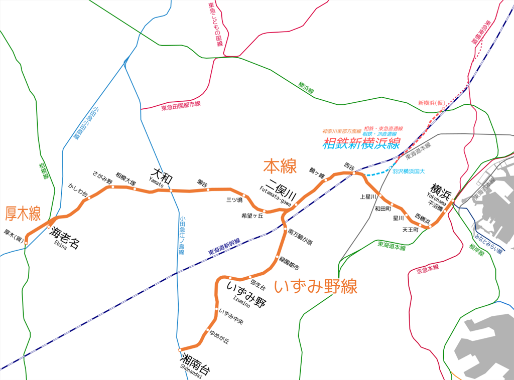
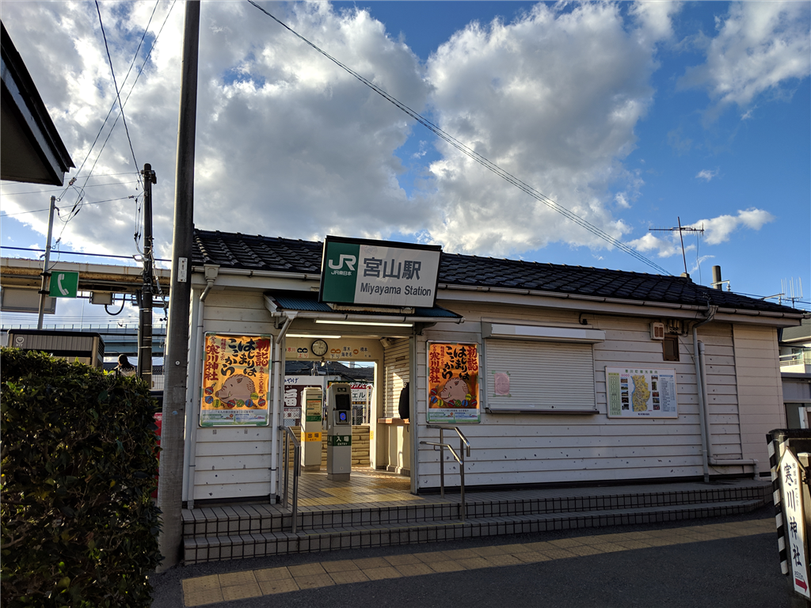
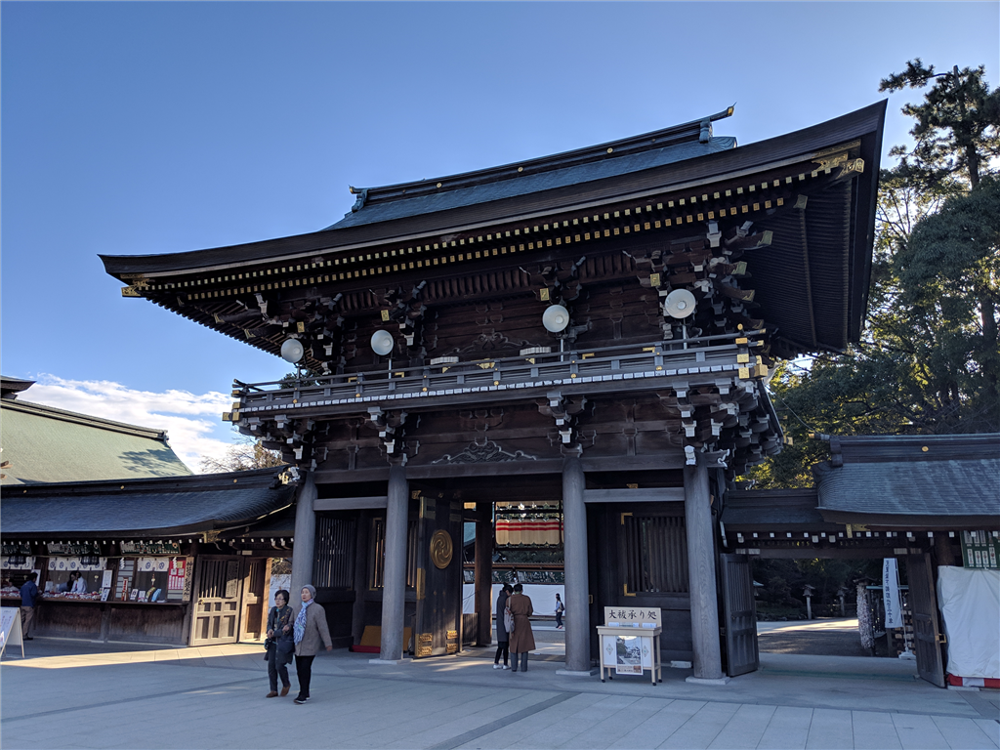
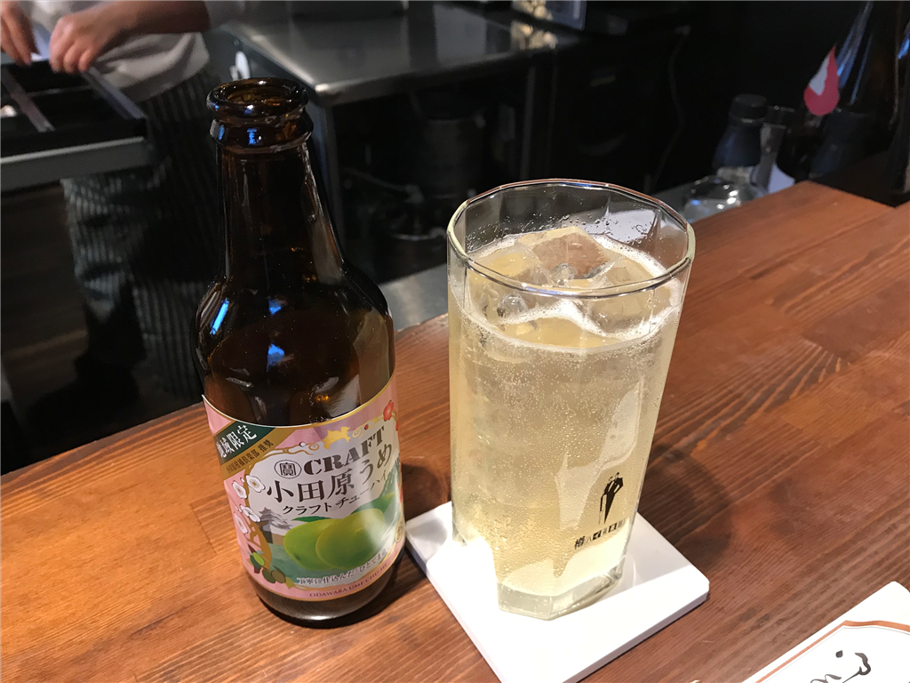

12月28日：寒川神社
公開日：
小田原で仕事をしている父と弟1号の顔を見るついでに、相模国一之宮・寒川神社に詣でてきました。
関西生まれなので名前すら知らない神社でしたが、茅ケ崎のちょっと北にあるらしい。今回は相鉄線というのにも乗ってみたかったので（割と電車に乗るのは好きです！）、
- 市川 →（JR 総武快速線）→ 横浜
- 横浜 →（相鉄線）→ 海老名
- 海老名 →（JR 相模線）→宮山（寒川神社）→ （JR 相模線）→ 茅ケ崎
- 茅ケ崎 →（JR 東海道線）→ 小田原
というルートをチョイスしてみました。
相鉄線
相鉄 って 相模 とどこの 鉄 を結んでるんだって思ったけど、相模鉄道なのか pic.twitter.com/nd43tKmSWT
— if 文を華麗に操るだるやなぎ (@daruyanagi) 2018年12月28日
横浜駅での乗り換えで名前だけは知っていたのですが、乗ったこともなければ、どこを走ってるのかも知りませんでした。

横浜～海老名をつなぐ本線と、二俣川から南、湘南台（どこやそれ）へと別れる枝線から成っており、路線こそ短いものの、沿線に海老名市（SA があるとこ）や大和市（※奈良じゃない）といったベッドタウンを抱えており、そこそこ繁盛している感じでした。関西で言えば、雰囲気的には南海あたりでしょうか。
車窓はそれほど面白くもなく、30分ほどで海老名駅に到着しました。
都会っぽい田舎だ pic.twitter.com/wOTPMQXKwG
— if 文を華麗に操るだるやなぎ (@daruyanagi) 2018年12月28日
ここで、JR 相模線へ乗り換え。間違えて小田急の改札に入ってしまったのですが、相模線はちょっと離れたところにあるみたい。SUICA で入場してしまったので、駅員さんに謝って改札を出してもらいました。
相模線
相模線は相模原市・橋本と茅ケ崎を南北に結ぶローカル線。相模原や座間ではドカタ仕事をしていたこともあるのですが、どうもこの辺りは地理感覚がよくわからん。
— if 文を華麗に操るだるやなぎ (@daruyanagi) 2018年12月28日
実際に乗るまで知らなかったのですが、この相模線は単線のようです。ドアは手動でボタンを押して開けるタイプ……油断したら恥ずかしい思いをするヤツだ。
都会人だからこれの使い方に自信がなくてな pic.twitter.com/7lRLMA0Y3f
— if 文を華麗に操るだるやなぎ (@daruyanagi) 2018年12月28日
（写真は東海道線のもの）
途中にある宮山駅というのが、目指す寒川神社のある駅です。ほかの乗降客の動きを観察しながら、ボタンを押すタイミングや作法を盗む。

寒川神社
宮山駅から寒川神社までは徒歩で10分弱。駅から出て、目の前の道路を右に折れ、まっすぐ歩くだけでつきます。途中にある陸橋は左側にしか歩道がないので、右に折れるときは横断歩道を渡っておくのが吉。

祭神はサムカワヒコとサムカワヒメ。記紀には記載がないようですが、このあたりに土着していた有力氏族の氏神なのかな。
寒川比古命（さむかわひこのみこと）と寒川比女命（さむかわひめのみこと）のニ柱の神を祀り、寒川大明神と奉称しています。寒川大明神は相模國を中心に広く関東地方をご開拓になられ、衣食住など人間生活の根源を開発指導され、関東地方文化の生みの親神様として敬仰されてきました。
寒川神社は江戸（東京）から見て南西（坤）の地に鎮座しており、江戸（現在の皇居）の裏鬼門にあたります。また、通常社殿は南向き、もしくは東向きに建てられるのですが、寒川神社は南西を向いています。そのため、古来より関八州の守護神として、また江戸の裏鬼門をお護りする神社として崇敬され、とりわけ八方除・方位除の神様として信仰されてきました。
かつてはこのあたりにまで海岸線が迫っていたとも聞きますが、南西向きに鎮座していたのはミヤコからの勢力に備えるためか、なんて想像もしちゃいますね。関東の入り口、東「海」道を抑える要衝って感じなのでしょうか。
この神社のウリは、難波の小池を中心とした神苑みたいですね。御祈祷を受けた人は入れるのだそうですが……受付棟は立派で、割とモダンというかシステマティックな感じを受けました。言い方は悪いですが、これで儲けてるんだなぁ。
自分はとくに祈祷を受けたいこともなかったし、夕方に約束もあったので、今回は御朱印だけもらって帰りました。この神社を堪能するなら受けといたほうがよかったのだろうけど……まぁ、厄除けだか何だかのときには立ち寄ってもいいのかもしれない。
小田原

そのあとは弟の現場に顔を出して、夕食を一緒にしました（仕事が終わるのを待つ間、地元のクラフトチューハイを飲んでみたりｗ）。2次会に飲み歩いて、〆にラーメンまで食べてしまったのですが、なかなかおいしかったです。

- ジャンル：ラーメン
- 住所： 小田原市栄町2-1-15 エクレールK栄町101
- このお店を含むブログを見る |
- (写真提供：アドさん)
 麺処 ガンテツをぐるなびで見る | 小田原・南足柄のラーメンをぐるなびで見る
麺処 ガンテツをぐるなびで見る | 小田原・南足柄のラーメンをぐるなびで見る
追伸
相鉄線、一回乗っただけで、Twitter のプロモーションが全部（大袈裟）これになった pic.twitter.com/HZI03CG48H
— if 文を華麗に操るだるやなぎ (@daruyanagi) 2018年12月28日